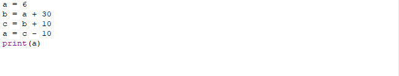

Что такое переменные? Переменные это какие-либо символы(буквенные), в которых хранится какая-либо информация.
ВАЖНО: переменная не должна совпадать с названиями функций в python!
То есть, можно взять, к примеру, переменную 'a' и приравнять к ней значение 'Hello World!', а после вывести данную переменную.
Более наглядно можно показать на примере:
То есть переменные используются для хранения каких-либо данных, а эти данные могут быть какими угодно, собственно, как и переменные.
В дальнейшем мы будем очень часто применять переменные в процессе работы, а пока попробуйте решить данный пример:

Ответом будет 36. Почему? Потому что в процессе присваивания новой информации к переменной старая стирается. Вот так просто.